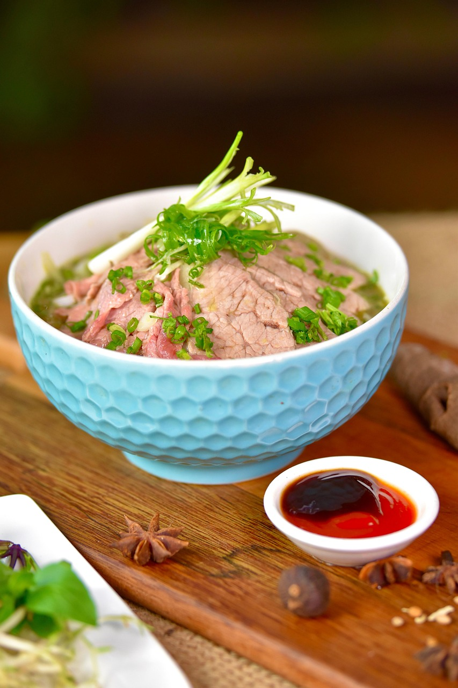

Beef Pho

Description
A classic Vietnamese dish, pho an incredibly fresh and aromatic beef soup which needs time to come
together, but is low fuss and well worth the wait.
Ingredients
Yields 8 servings
- 5 pounds beef marrow, knuckle bones, or oxtail
- 2 pounds beef chuck or beef brisket, cut in 2 pieces
- 5 quarts water
- 2 yellow onions, skins on, quatered
- 1 2-inch piece of ginger, cut in half
- 4 scallions
- 10 star anise
- 6 cloves
- 1 cinnamon stick
- 1 black cardamom pod
- 2 teaspoons whole fennel seeds
- 2 teaspoons whole corriander seeds
- 1/4 cup fish sauce
- 2 ounces granulated sugar
- 1 pound dried pho noodles
- 1/2 pound tender, lean beef, such as sirloin
Garnishes
- Thai Basil
- Cilantro
- Lime Wedges
- Sliced chili
- (Optional) Hoisin sauce
- (Optional) Sriracha
Steps
- Place bones and brisket/chuck in a large stock pot and add water to cover. (Optional)
par boil bones and brisket/chuck for 5 minutes in a large stock pot. Discard water and fill again.
- Add 7 onion quaters, reserving one to slice for garnish. Add ginger and 2 scallions to the pot. Keep
at a low simmer for an hour or until the chuck/brisket becomes tender.
- Remove one piece of the chuck/brisket from the pot and refrigerate to be sliced into the broth later.
Skim the surface of the broth to remove foam and fat.
- Toast spices in a dry skillet on medium heat until fragrant. Add to a spice bag or
wrap in a cheesecloth and add to the broth.
- Continue simmering for 4-6 hours. Add fish sauce and sugar, adding any more to taste.
- Before serving, slice remaining scallions for garnish, thinly slice reserved chuck/brisket, and very thinly slice the sirloin and onion quarter
(about 1/4 inch for chuck/brisket, 1/8 inch for sirloin/onion).
- Strain broth using a colander, and again through a shinwa if available for further clarification.
- Boil noodles to package instructions. To serve, add noodles to bowl, add slices of sirloin and chuck/brisket, then
ladel broth. The broth will cook the sirloin. Add garnishes, with hoisin sauce and sriracha on the side for dipping.
Home